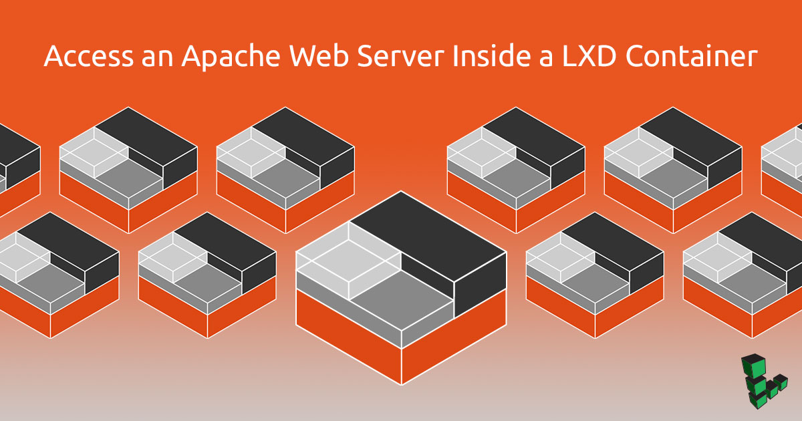
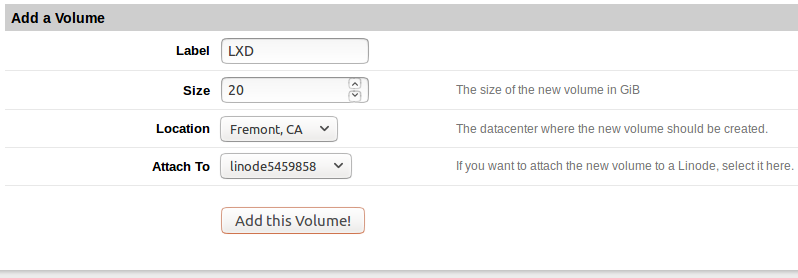
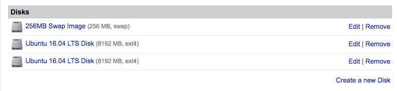
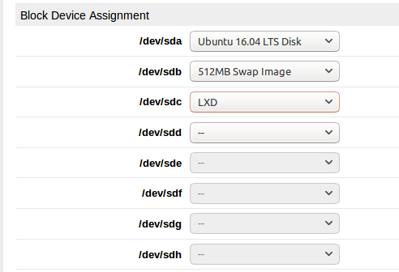

Access an Apache Web Server Inside a LXD Container
Updated by Linode Contributed by Simos Xenitellis

What is LXD?
LXD (pronounced “Lex-Dee”) is a system container manager build on top of LXC (Linux Containers) that is currently supported by Canonical. The goal of LXD is to provide an experience similar to a virtual machine but through containerization rather than virtualization. Compared to Docker for delivering applications, LXD offers nearly full OS functionality with additional features such as snapshots, live migrations, storage management, and more.
The main benefits of LXD are the high density of containers that it can support and the performance it delivers compared to virtual machines. A computer with 2GB RAM can adequately support half a dozen containers. In addition, LXD officially supports the container images of major Linux distributions. We can choose the Linux distribution and version to run in the container.
This guide covers how to setup a Linode to work with LXD, how LXD works in practice, and how to troubleshoot common issues.
NoteFor simplicity, the term container is used throughout this guide to describe the LXD containers.
Before You Begin
Complete the Getting Started guide. If you are using a Block Storage Volume, select the image
Ubuntu 16.04 LTSfrom the drop-down menu according to the instructions.This guide will use
sudowherever possible. Follow the Securing Your Server guide to create a standard user account, harden SSH access, and remove unnecessary network services.Update your system:
sudo apt update && sudo apt upgrade
Mount Storage Volume
When setting up LXD, you can either store container data in an external volume (such as a Block Storage Volume) or in a Disk mounted to your Linode.
Block Storage Volume
Follow the How to Use Block Storage with Your Linode guide and create a block storage volume with size at least 20GB and attach it to your Linode. Make a note of the device name and the path to the Volume.
Caution
Do not format the volume and do not add it to/etc/fstab.
Edit your Configuration Profile and under Boot Settings select GRUB 2 as your kernel. See Run a Distribution-Supplied Kernel on a KVM Linode for more information.
Reboot your Linode from the Linode Manager.
Disk
In the Linode Manager, find the Disks section and click Create a new disk.

Note
If your Linode’s distribution disk already has 100% of the available disk space allocated to it, you will need to resize the disk before you can create a storage disk. See Resizing a Disk for more information.Edit your Linode’s Configuration Profile. Under Block Device Assignment, assign your new disk to
/dev/sdc. Make a note of this path, which you will need when configuring LXD in the next section.
Under Boot Settings select GRUB 2 as your kernel.
Reboot your Linode from the Linode Manager.
Initialize LXD
Install the packages
lxdandzfsutils-linux:sudo apt install lxd zfsutils-linuxAdd your Unix user to the
lxdgroup:sudo usermod -a -G lxd usernameStart a new SSH session for this change to take effect:
Run
lxd initto initialize LXD:sudo lxd initYou will be prompted several times during the initialization process. Choose the defaults for all options except
Use existing block device?For this option, select yes and then enter the path to the storage volume added in the previous section.
LXD Commands
List all containers:
lxc listGenerating a client certificate. This may take a minute... If this is your first time using LXD, you should also run: sudo lxd init To start your first container, try: lxc launch ubuntu:16.04 +------+-------+------+------+------+-----------+ | NAME | STATE | IPV4 | IPV6 | TYPE | SNAPSHOTS | +------+-------+------+------+------+-----------+List all available container images:
lxc image list images:+---------------------------------+--------------+--------+------------------------------------------+---------+----------+-------------------------------+ | ALIAS | FINGERPRINT | PUBLIC | DESCRIPTION | ARCH | SIZE | UPLOAD DATE | +---------------------------------+--------------+--------+------------------------------------------+---------+----------+-------------------------------+ | alpine/3.4 (3 more) | 39a3bf44c9d8 | yes | Alpine 3.4 amd64 (20180126_17:50) | x86_64 | 2.04MB | Jan 26, 2018 at 12:00am (UTC) | +---------------------------------+--------------+--------+------------------------------------------+---------+----------+-------------------------------+ | alpine/3.4/armhf (1 more) | 9fe7c201924c | yes | Alpine 3.4 armhf (20170111_20:27) | armv7l | 1.58MB | Jan 11, 2017 at 12:00am (UTC) | +---------------------------------+--------------+--------+------------------------------------------+---------+----------+-------------------------------+ | alpine/3.4/i386 (1 more) | d39f2f2ba547 | yes | Alpine 3.4 i386 (20180126_17:50) | i686 | 1.88MB | Jan 26, 2018 at 12:00am (UTC) | +---------------------------------+--------------+--------+------------------------------------------+---------+----------+-------------------------------+ | alpine/3.5 (3 more) | 5533a5247551 | yes | Alpine 3.5 amd64 (20180126_17:50) | x86_64 | 1.70MB | Jan 26, 2018 at 12:00am (UTC) | +---------------------------------+--------------+--------+------------------------------------------+---------+----------+-------------------------------+ | alpine/3.5/i386 (1 more) | 5e93d5f4cae1 | yes | Alpine 3.5 i386 (20180126_17:50) | i686 | 1.73MB | Jan 26, 2018 at 12:00am (UTC) | +---------------------------------+--------------+--------+------------------------------------------+---------+----------+-------------------------------+ | alpine/3.6 (3 more) | 5010616d9a24 | yes | Alpine 3.6 amd64 (20180126_17:50) | x86_64 | 1.73MB | Jan 26, 2018 at 12:00am (UTC) | +---------------------------------+--------------+--------+------------------------------------------+---------+----------+-------------------------------+ .....................................................................Note
The first two columns for the alias and fingerprint provide an identifier that can be used to specify the container image when launching it.Launch a new container with the name
mycontainer:lxc launch ubuntu:16.04 mycontainerCreating mycontainer Starting mycontainerCheck the list of containers to make sure the new container is running:
lxc list+-------------+---------+-----------------------+---------------------------+------------+-----------+ | NAME | STATE | IPV4 | IPV6 | TYPE | SNAPSHOTS | +-------------+---------+-----------------------+---------------------------+------------+-----------+ | mycontainer | RUNNING | 10.142.148.244 (eth0) | fde5:5d27:...:1371 (eth0) | PERSISTENT | 0 | +-------------+---------+-----------------------+---------------------------+------------+-----------+Execute basic commands in
mycontainer:lxc exec mycontainer -- apt update lxc exec mycontainer -- apt upgradeNote
The characters--instruct thelxccommand not to parse any more command-line parameters.Open a shell session within
mycontainer:lxc exec mycontainer -- sudo --login --user ubuntuTo run a command as administrator (user "root"), use "sudo". See "man sudo_root" for details. ubuntu@mycontainer:~$ Note
The Ubuntu container images have by default a non-root account with username
ubuntu. This account can usesudoand does not require a password to perform administrative tasks.The
sudocommand provides a login to the existing accountubuntu.View the container logs:
lxc info mycontainer --show-logStop the container:
lxc stop mycontainerRemove the container:
lxc delete mycontainer
Apache Web Server with LXD
This section will create a container, install the Apache web server, and add the appropriate iptables rules in order to expose post 80.
Launch a new container:
lxc launch ubuntu:16.04 webUpdate the package list in the container.
lxc exec web -- apt updateInstall the Apache in the LXD container.
lxc exec web -- apt install apache2Add the
iptablesrule to expose the port 80. When someone connects to port 80 through the public IP address, this rule redirects them to port 80 of the container.You will need to replace
your_public_ipandyour_container_ipwith your public IP and container IP respectively in this command.PORT=80 PUBLIC_IP=your_public_ip CONTAINER_IP=your_container_ip sudo -E bash -c 'iptables -t nat -I PREROUTING -i eth0 -p TCP -d $PUBLIC_IP --dport $PORT -j DNAT --to-destination $CONTAINER_IP:$PORT -m comment --comment "forward to the Apache2 container"'Make the
iptablesrule persist on reboot by installingiptables-persistent. When prompted to save the IPv4 and IPv6 rules, click Yes in order to save them.sudo apt install iptables-persistentFrom your local computer, navigate to your Linode’s public IP address in a web browser. You should see the default Apache page:
{kind=link}
Next Steps
If you plan to use a single website, then a single iptables rule to the website container will suffice. If you plan to use multiple websites, you will need to install a web server such as NGINX and set up a reverse proxy in a container. The iptables rule would then redirect to this container.
More Information
You may wish to consult the following resources for additional information on this topic. While these are provided in the hope that they will be useful, please note that we cannot vouch for the accuracy or timeliness of externally hosted materials.
Join our Community
Find answers, ask questions, and help others.
This guide is published under a CC BY-ND 4.0 license.